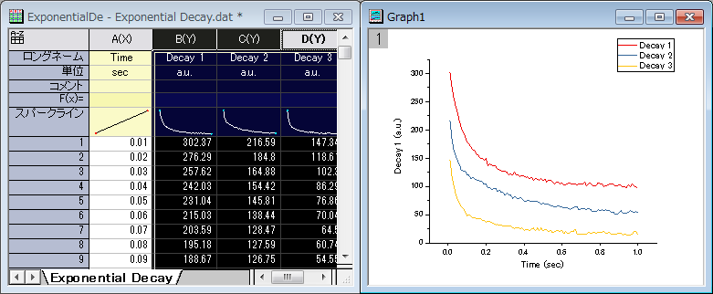
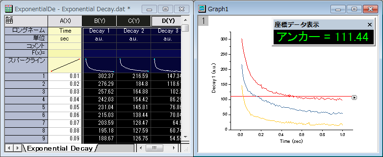
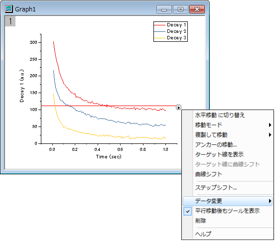
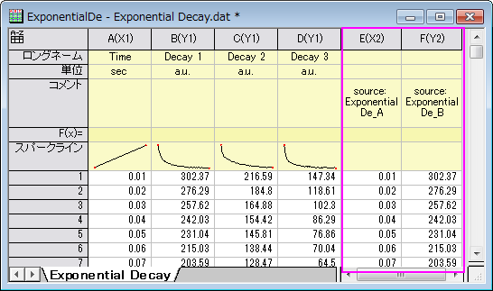
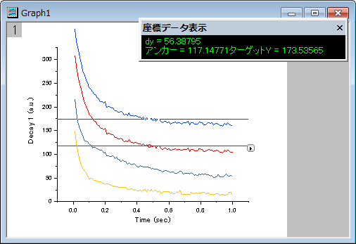
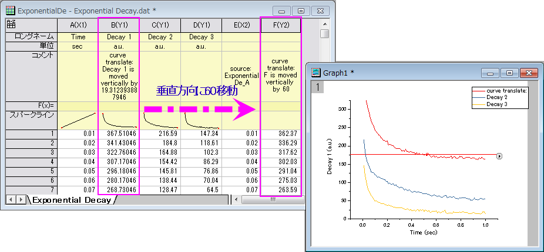
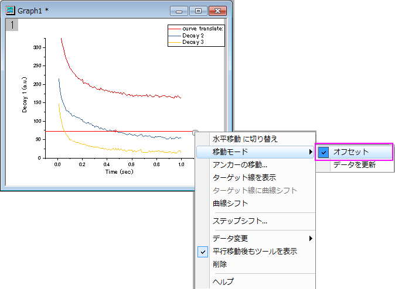
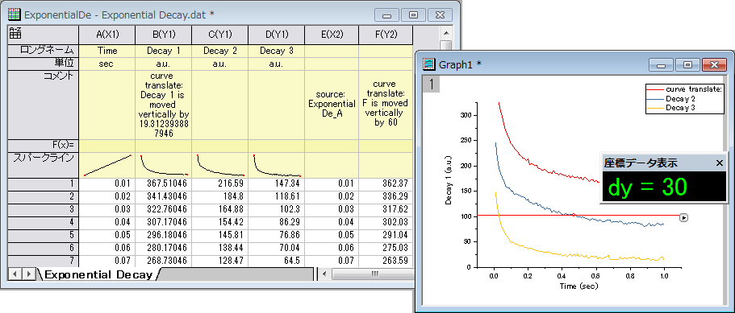
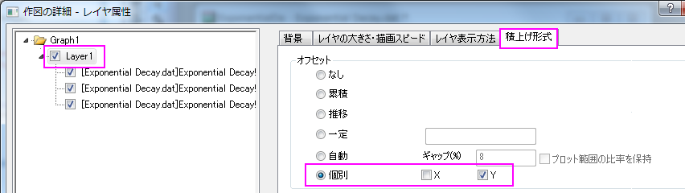
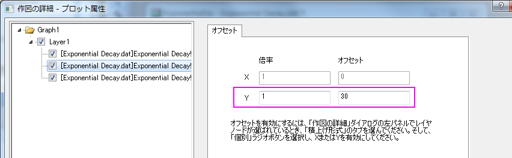
このツールはアクティブな曲線を水平や垂直に移動する時に使用します。
このツールを使うには
このツールは、アクティブな曲線にアンカーと赤い線を追加します。
この機能はアンカー（赤い円）付きの赤い線をアクティブな曲線に追加し、データプロットを水平または垂直方向に移動します。移動方向は、水平方向または垂直方向どちらを選択したかに依存します。
アンカー線をクリックしてドラッグし、アクティブなデータプロットを新しい位置に移動できます。また、アンカーをドラッグして線の位置を変更できます。線を移動したとき、アンカーは常にアクティブな曲線上に配置されます。
新しい位置にプロットをドラッグしているときに、移動を取り消したい場合には、マウスの左ボタンを離さずに右ボタンを押してください。その後右ボタン、左ボタンの順で離します。すると曲線は戻ります。
Note:曲線を移動すると、元のワークシートデータも同時に変化します。
| 垂直/水平移動に切り替え |
水平移動から垂直移動に切り替え、または、垂直移動から水平移動に切り替えが可能です。 |
|---|---|
| 移動モード |
|
| 複製して移動 |
移動モードをデータを更新にしたときに利用可能です。新しい列/シート/ブックに複製して変換を選択すると、現在の曲線のデータを新しい列/シート/ブックに複製し、プロットを移動すると複製されたデータが更新されます。新しい列/シート/ブックに複製して変換を選択しない場合、プロットを移動するとソースワークシートの生データが変更されます。 |
| アンカーの移動… |
アンカーの移動先ダイアログボックスを開きます。行番号または値で指定した位置にアンカーを移動できます。
|
| ターゲット線を表示 |
ターゲット線を表示するかどうかを指定します。ターゲット線を表示した場合、これを希望の位置にドラッグアンドドロップし、ターゲット線に曲線シフトを選択するとターゲット線で定義された位置に曲線を移動できます。 |
| ターゲット線に曲線シフト |
ターゲット線が表示されているときに利用できます。選択すると、現在の曲線をターゲット線の位置に移動できます。 |
| 曲線シフト |
曲線のシフトダイアログが開き、曲線の移動量または、移動先の位置を指定できます。 |
| ステップシフト |
ステップシフトダイアログが開き、移動の増分を指定できます。
|
| データ変更 |
移動するアクティブプロットを変更フライアウトリストからプロットを選択すると、アンカー線が新しいプロットに移動します。 |
| 移動後もツールを表示 |
移動が実行された後もツールを表示したままにするか指定します。 |
| 削除 |
グラフから曲線移動ツールを削除するか指定します。 |
| ヘルプ |
このツールのヘルプ文書を開きます。 |
フライアウトメニューから、アンカーの移動...を選び、ダイアログを開きます。
行番号または値で指定した位置にアンカーを移動できます。
Note: 指定値でアンカーを移動する場合は、指定の値に最も近いデータ値にアンカーを移動します。
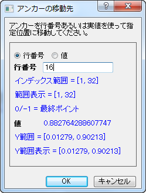
LabTalk式またはOriginの組み込みの統計関数のうち1つを組み込んだ式を入力することもできます。詳細はこちらをご覧ください。値にポイントがない場合、アンカーは隣接する最も近いポイントに移動することに注意してください。
フライアウトメニューで、ステップシフトを選択して、ダイアログを開き、ステップ移動値をダイアログに入力します。アンカー線をドラッグすると、指定した増分の倍数で移動位置に一番近い値でシフトします。
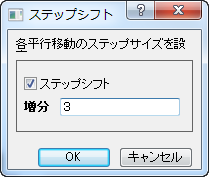
このサンプルでは、2つの異なる曲線を垂直に移動する方法： データの更新 または積上げスタックを紹介します。1番目の曲線はデータ変更モードで移動し、2番目の曲線はオフセットで移動します。